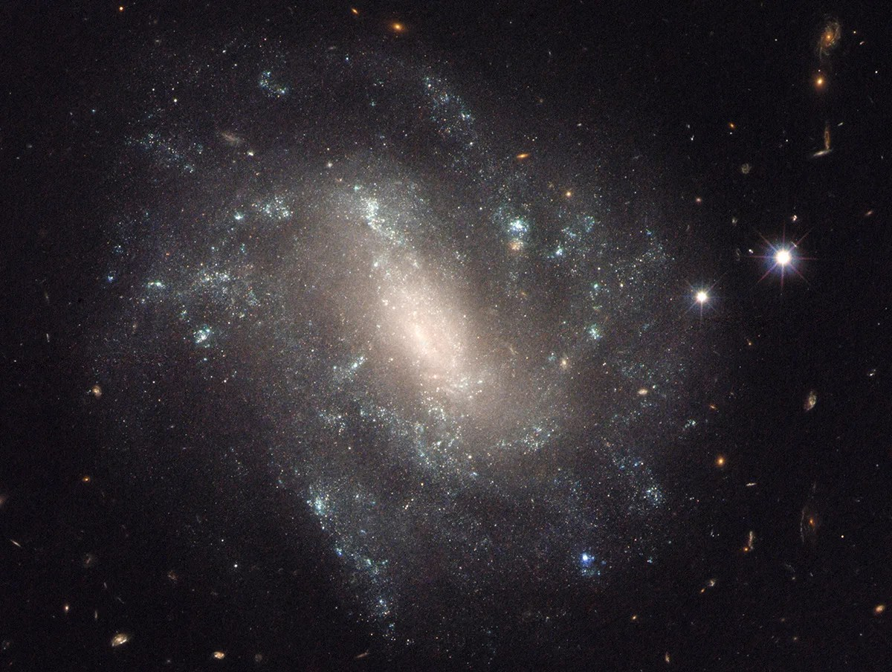

Details of the dark energy reduction study
The nature of dark energy
Dark energy is the most enigmatic component of the universe, an unknown form of energy that accounts for about 70% of the total energy in the universe. As the name implies, “dark” means that it is not directly observable. Dark energy does not emit or absorb light, nor does it interact with ordinary matter or electromagnetic waves. Nevertheless, scientists have indirectly confirmed its existence through a phenomenon called the accelerated expansion of the universe. In the late 1990s, scientists made the shocking discovery that the universe was expanding faster than expected through observations of distant supernovae, and the concept of dark energy was introduced to explain it. Dark energy is understood to be responsible for pushing the entire universe apart by creating a repulsive force that acts in opposition to gravity.
DESI projects and dark energy research
The Dark Energy Spectroscopy Instrument (DESI) project, led by an international team of researchers including the Korea Astronomical Institute, is a large international collaborative project to create a three-dimensional map of the universe, involving about 900 researchers from 11 countries and 70 institutions. The project aims to uncover the identity of dark energy, which accounts for about 70% of the total energy in the universe.
The team analyzed three years of data covering 15 million galaxies and quasars (quasi-stellar objects). In doing so, they traced the effects of dark energy through the way matter is spread throughout the universe, and they uncovered changes in the density of dark energy by measuring the patterns of baryonic acoustic oscillations (BAO) left behind by events in the early universe.
Conflicts with the standard model of cosmology
According to the standard model of cosmology, the universe was born 13 billion years ago in the Big Bang and has been expanding ever since, with the matter we see comprising only 4% of the universe and the rest made up of dark matter (27%) and dark energy (69%). Dark energy, in particular, is responsible for the accelerated expansion of the universe and has traditionally been treated as a constant that does not change with time.
The cosmological constant (Λ), first introduced by Einstein in his general theory of relativity, has become the simplest model for describing dark energy in modern cosmology. In this model, dark energy has the same density at every point in space and time, a property that does not change over time. This is called the “cosmological constant” or “vacuum energy.”
However, when the team analyzed the DESI data combined with observations of the cosmic microwave background radiation, supernovae, and weak lensing, they found that the standard cosmological model of dark energy as a cosmological constant does not match the observational data. Instead, they concluded that a model of dark energy that varies over time better explains the observations.
Implications for the future of the universe
Based on the findings of this study, it is possible that the standard model of cosmology may need to be revised because the expansion of the universe is slowing down. The discovery that dark energy is weakening over time could change predictions about the ultimate fate of the universe.
The interaction of dark energy and dark matter plays an important role in predicting the ultimate fate of the universe. If dark energy continues to weaken, the expansion of the universe may proceed in a different way than currently predicted. This is because gravity acts as a brake, slowing the expansion of the universe, while dark energy acts as an accelerator, pushing the universe forward.
The Standard Model predicts that the constant density of dark energy will keep the universe accelerating forever, eventually leading to an end, such as a “Big Rip” or “Heat Death.” However, if dark energy were to decrease, a “Big Crunch,” in which the universe eventually stops expanding and contracts back down, would be possible.
“Starting with the extraordinary discovery that dark energy may not be a cosmological constant, we will continue our research that will change the standard model of cosmology and shake the foundations of theoretical physics,” said Dr. Shafi’elu Alman. “The process by which the dark energy density decreased is an area of further research,” says Dr. Seokwook Hong.